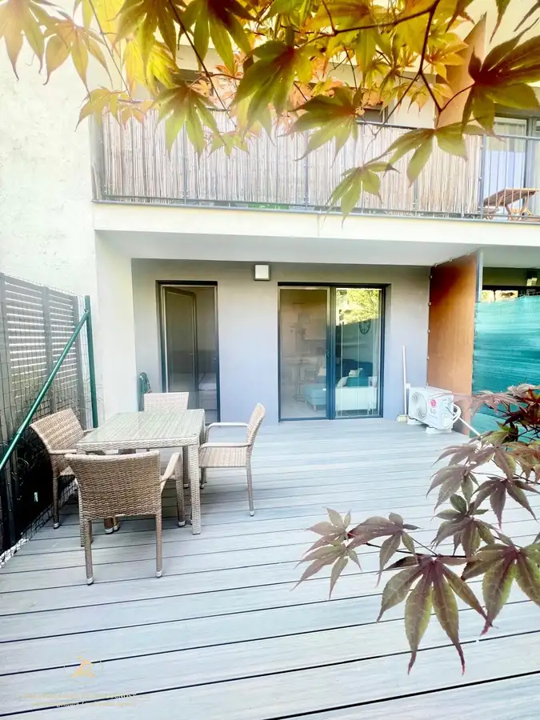
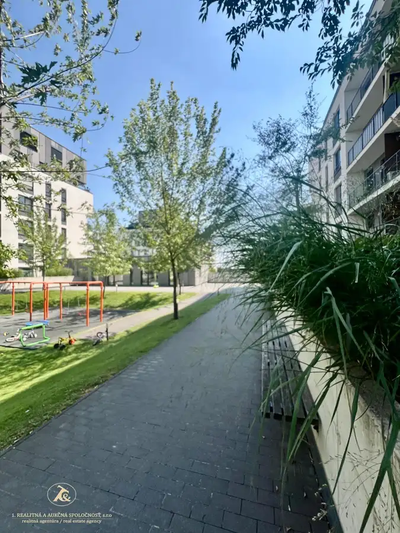
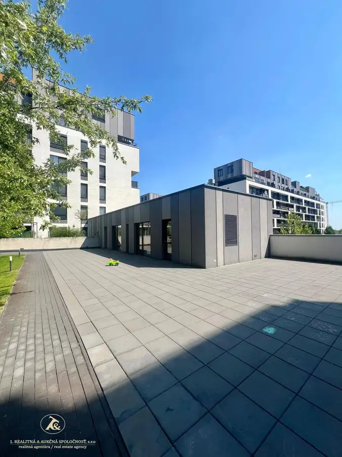
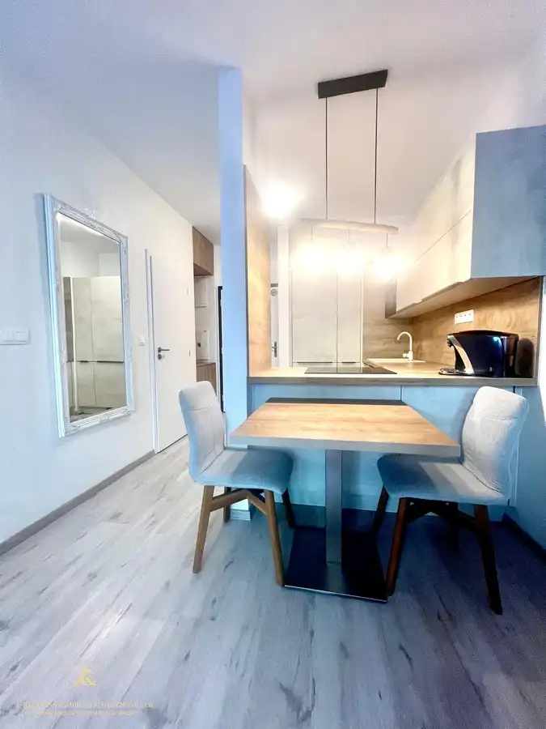
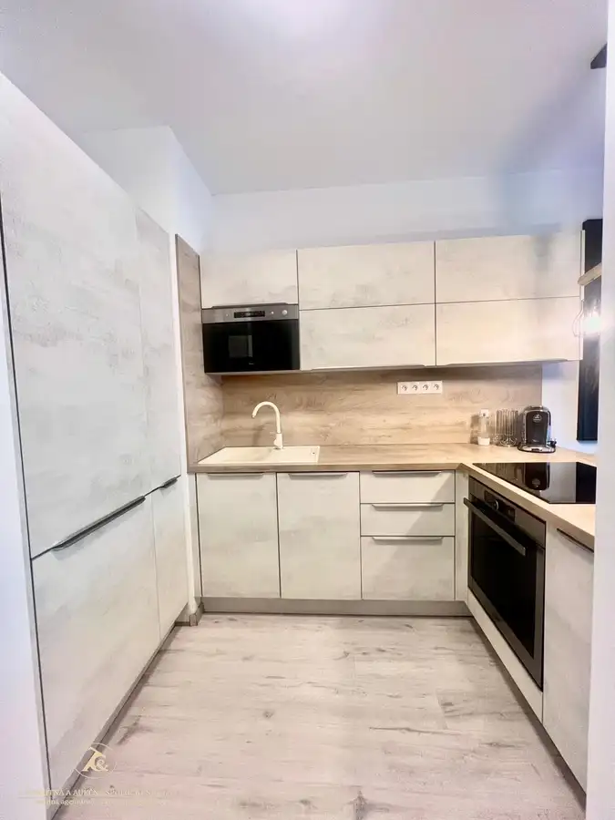
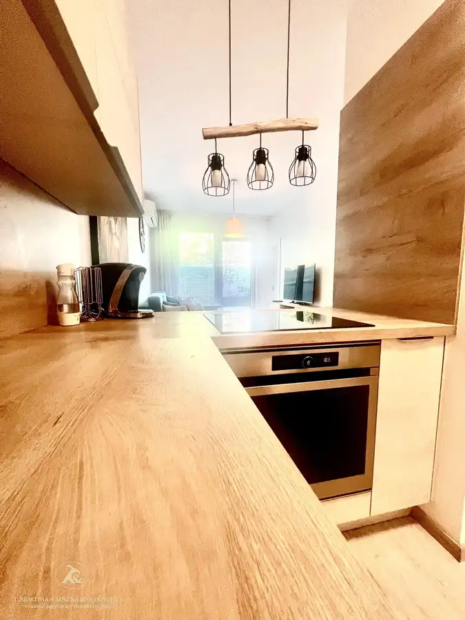

Novostavba bytu -Slnečnice mesto - BA -Petržalka
Petržalka, Bratislava







- Dispozícia2-izbový
- Plocha60 m²
- Poschodie1.
- StavNovostavba
- VlastníctvoOsobné
- Energetická triedaB
O nehnuteľnosti
Ponúkame na predaj nový plne zariadený byt na ulici Zuzany Chalupovej v obľúbenom projekte Slnečnice.Tento byt je ideálnym spojením funkčného dizajnu, nadštandardnej terasy a vyhľadávanej lokality.Jedná sa o prízemný byt s veľkou terasou orientovaný juhovýchodným smerom.ZÁKLADNÉ INFORMÁCIE:Dispozícia: funkčne využívaný byt ako 2 izbový , pôvodne 1 izbový (inteligentne rozdelený na dennú a nočnú časť z oboch izieb s výstupom na terasu)Plocha interiéru: 33 m²Plocha terasy: 26,88 m² (orientovaná do tichého vnútrobloku)Parkovanie: Garážové státie v krytej garáži pod domomVlastníctvo: osobnéHLAVNÉ BENEFITY BYTU:Praktická dispozícia: Byt bol už od výstavby navrhnutý tak, aby poskytoval súkromie samostatnej spacej časti so šatníkom a priamym výstupom na terasu z obývacej izby aj spálne.Terasa ako druhá obývačka: Obrovská plocha takmer 27 m² je vysadená vyrastenými okrasnými drevinami, ktoré zabezpečujú súkromie a príjemnú atmosféru pre relax. Obsahuje aj praktický úložný priestor.Kompletné vybavenie: Moderná kuchyňa so vstavanými spotrebičmi a kúpeľňa so sprchovým kútom a práčkou.Klimatizácia: Zabudovaná jednotka s funkciou chladenia aj kúrenia (ideálne v prechodnom období).Úložné priestory: Vstavaný šatník a úložný systém pri vstupe do bytu.INVESTIČNÝ POTENCIÁLByt je vynikajúcou voľbou aj ako investícia.predáva sa komplet zariadený.Aktuálne je v byte spoľahlivý a dlhodobý nájomník, čo umožňuje plynulé pokračovanie nájomného vzťahu bez nutnosti hľadania nového klienta.Cena bytu: 226 000 €Garážové státie: 25 000 €Spolu: 251 000 € SLUŽBY:Predaj zabezpečuje realitný maklér a hypotekárny špecialista v jednej osobe.komplexný realitný servisodborné hypotekárne poradenstvozabezpečenie znaleckého posudkukompletný právny servis (zmluvná dokumentácia, kataster, bezpečný prevod financií)Mgr. Lívia Hološová tel: +421908769429 / email: livia.holosova@realitna.sk
Parametre
- Cena vrátane energií
- Nie
- Druh
- 2 izbový byt
- Dátum zverejnenia
- 16. 05. 2026
- Energetická náročnosť
- Nízkoenergetický
- Energetický certifikát budovy
- B
- Energie
- 115
- Garage area
- 16 m²
- Orientácia
- Juhovýchodná
- Plocha terasy v m2
- 27 m²
- Podlažie
- 1
- Počet izieb / miestností
- 2
- Rok kolaudácie
- 2021
- Rok poslednej rekonštrukcie
- 2021
- Rok výstavby
- 2020
- Stav nehnuteľnosti
- Novostavba
- Telekomunikácie
- Internet, Káblová TV, Optická sieť
- Terás
- 1
- Typ
- Predaj
- Typ konštrukcie
- Tehlová
- Umiestnenie
- Zvýšené prízemie
- Vlastníctvo
- Osobné
- Vybavenie
- Terasa, Garáž, Verejné parkovanie
- Vykurovanie
- Ústredné, Podlahové, Klimatizacia
- Úžitková plocha
- 60 m²
Kde to je


Mohlo by Vás zaujímať
 BytNové
257 500 €Atraktívny 2-izbový byt v Ružinove – ideálny na bývanie aj investíciu
Ružinov, Bratislava
2-izbový69 m²2. podlažie
BytNové
257 500 €Atraktívny 2-izbový byt v Ružinove – ideálny na bývanie aj investíciu
Ružinov, Bratislava
2-izbový69 m²2. podlažie
 BytNové
390 000 €Veľkorysý byt vhodný pre rodinu aj prácu z domu
Staré Mesto, Bratislava
4-izbový125 m²6. podlažie
BytNové
390 000 €Veľkorysý byt vhodný pre rodinu aj prácu z domu
Staré Mesto, Bratislava
4-izbový125 m²6. podlažie
 BytNové
143 000 €Na PREDAJ - praktické bývanie v Senci | 2-izbová dispozícia + balkón aj kobka
Senec
2-izbový35.46 m²3. podlažie
BytNové
143 000 €Na PREDAJ - praktické bývanie v Senci | 2-izbová dispozícia + balkón aj kobka
Senec
2-izbový35.46 m²3. podlažie